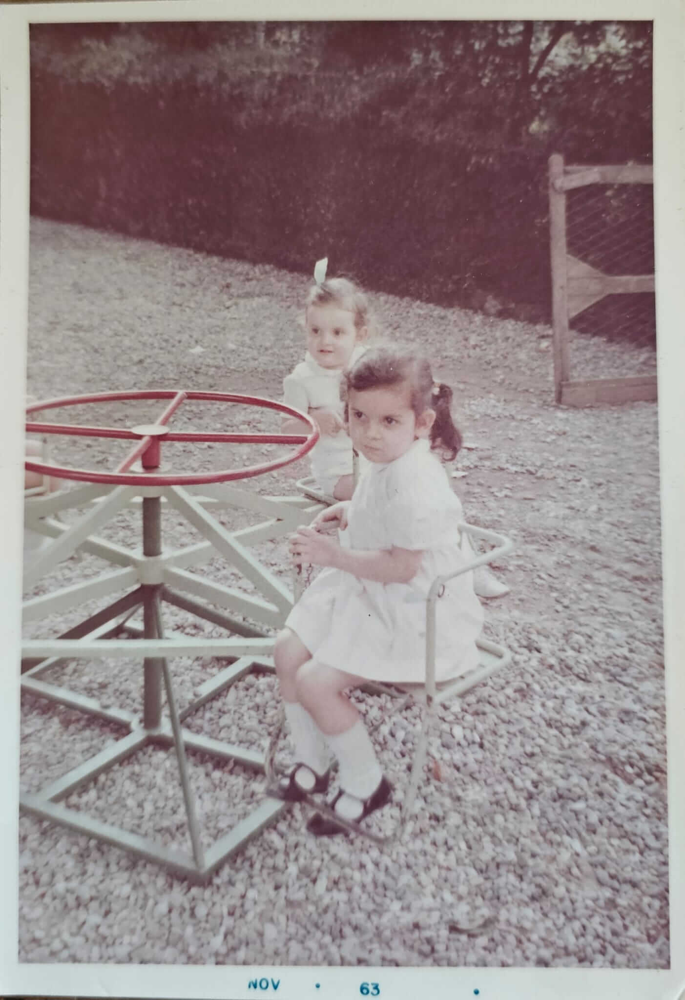
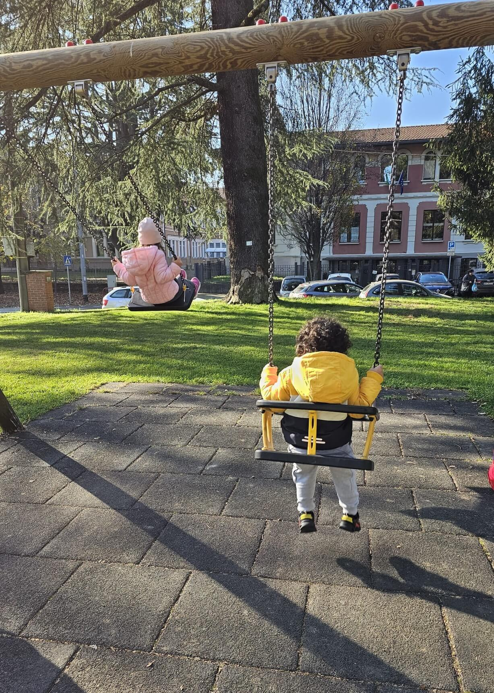
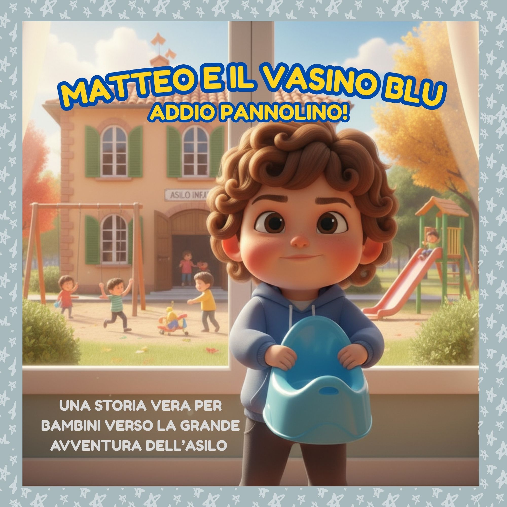
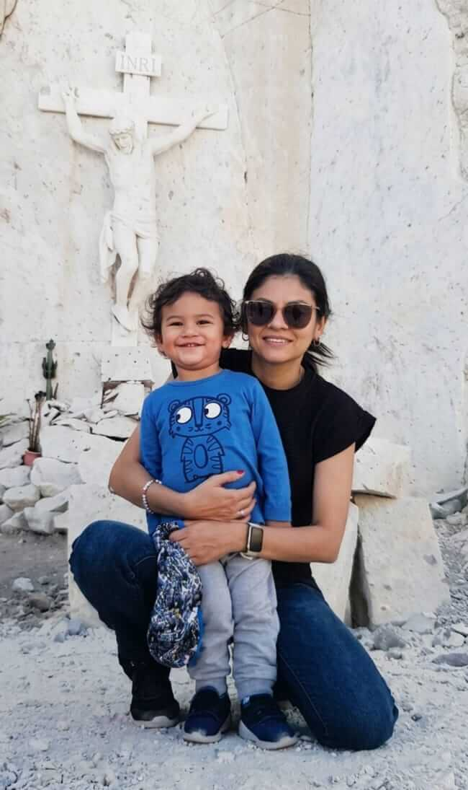

LA STORIA DIETRO LA STORIA
Tutto ha inizio nel 1967... [Texto de la historia] ...Matteo varca quel cancello con il suo vasino blu.




Addio pannolino! Una storia vera raccontata con amore da una mamma.

Tutto ha inizio nel 1967... [Texto de la historia] ...Matteo varca quel cancello con il suo vasino blu.



REALTÀ

FANTASIA

"Matteo e il Vasino Blu è il suo primo libro. E seguramente, non sarà l’ultimo."
